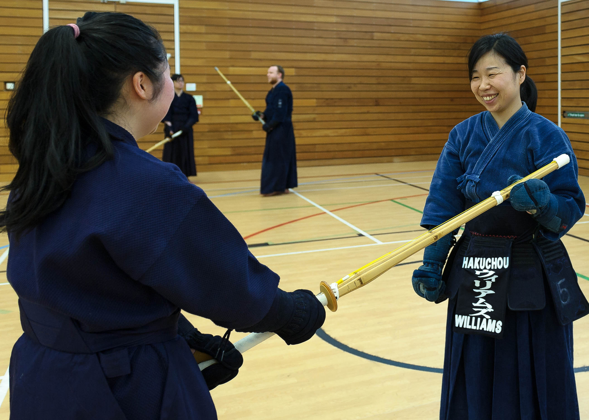

不動心 · Fudoshin · Immovable Mind
A traditional Japanese martial art practised in the heart of South Wales.
Start Your JourneyKendo, meaning "Way of the Sword", is the modern Japanese martial art of sword-fencing based on traditional swordsmanship.
It is a physically and mentally challenging activity that combines strong martial arts values with sport-like physical elements. Practitioners develop discipline, focus, and respect through rigorous training.
Rooted in the philosophy of Fudoshin — the immovable mind — Kendo teaches practitioners to remain calm and focused under pressure, both on and off the dojo floor.
Getting Started Meet Our Instructors